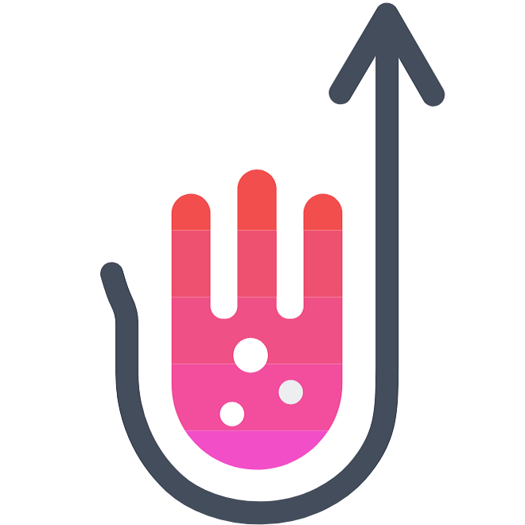
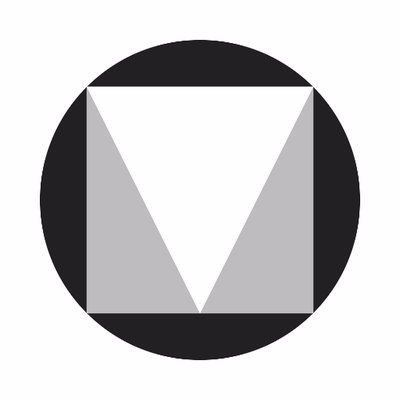

Wavecom is a light CSS and HTML framework intended to be as easy and as fast to use for large and small projects.offline_bolt

Semantic
Making it easy for the developer to complete his task was the main purpose. Wavecom is fully semantic and it just makes sense!face

Material
Wavecom's main design inspiration was Google's Material Design.We followed their guidelines to create a refreshing, minimalistic and modular look.school